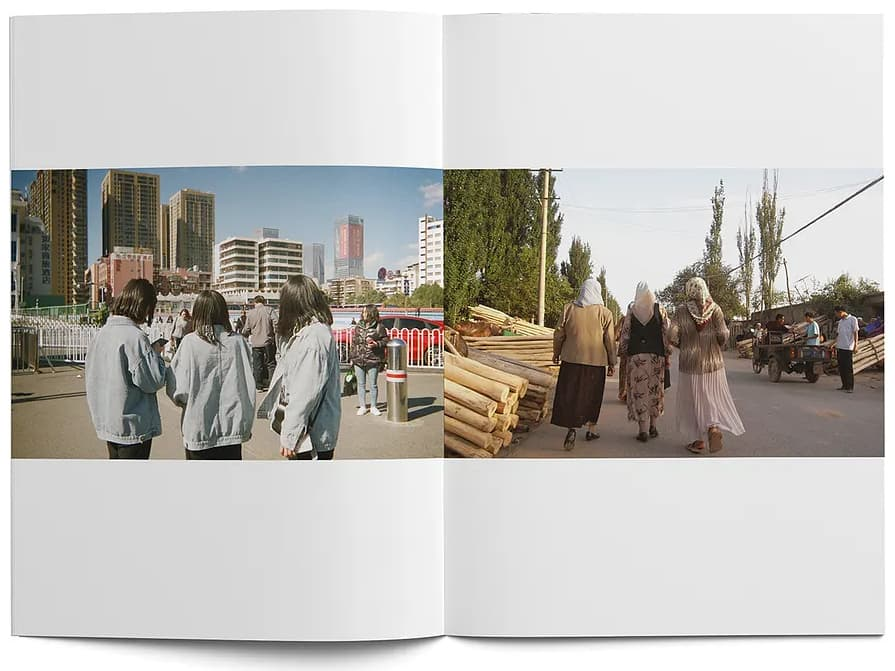
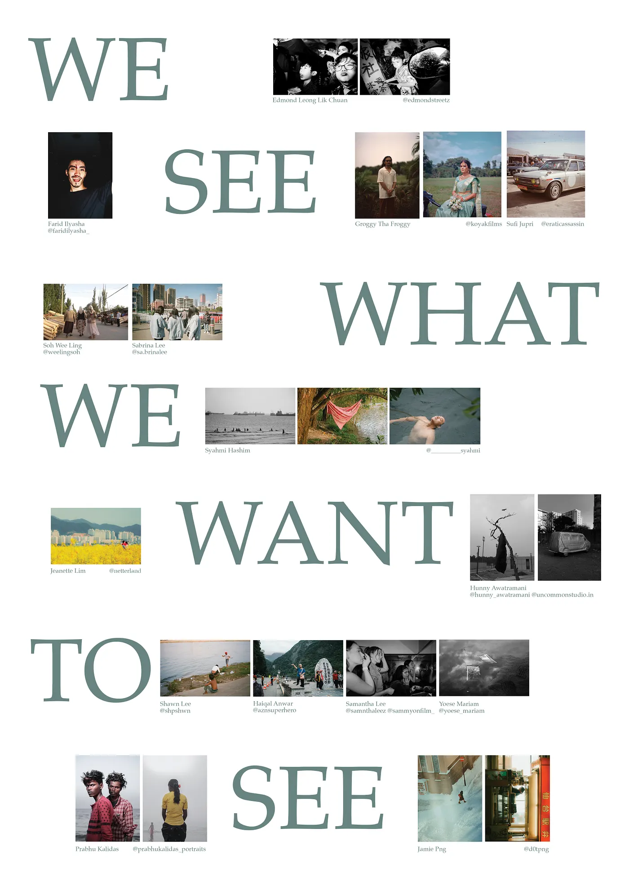
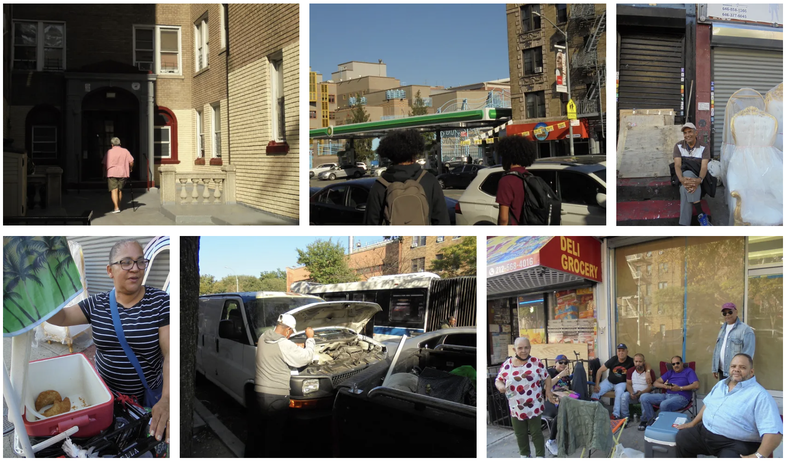
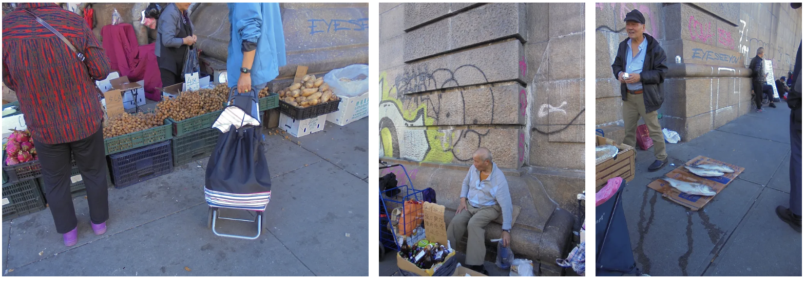

John Berger is going to help me here:
"Seeing comes before words. The child looks and recognizes before it can speak."
— Berger, Ways of Seeing (1972)
"But there is also another sense in which seeing comes before words."
— Berger (1972)
"It is seeing which establishes our place in the surrounding world; we explain that world with words, but words can never undo the fact that we are surrounded by it."
— Berger (1972)

"The relation between what we see and what we know is never settled."
— Berger (1972)
